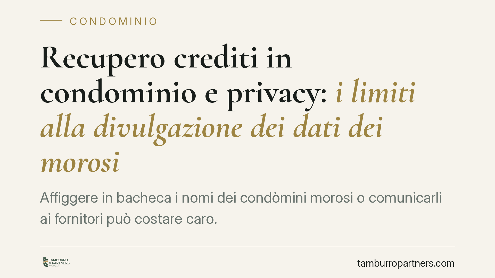

Recupero crediti in condominio e privacy: i limiti alla divulgazione dei dati dei morosi
Affiggere in bacheca i nomi dei condòmini morosi o comunicarli ai fornitori può costare caro. La divulgazione dei dati personali dei debitori a una platea indeterminata viola la normativa sulla protezione dei dati. Il confine tra legittima informazione interna e diffusione illecita è sottile e l'amministratore ne risponde in prima persona.

Il fatto e perché conta
Il recupero dei contributi non pagati è un compito ordinario dell'amministratore. Ma il modo in cui si sollecita il pagamento incontra un limite preciso: la tutela dei dati personali del condòmino moroso.
Il problema nasce quando l'informazione sulla morosità esce dal perimetro dei soggetti legittimati a conoscerla e raggiunge terzi estranei o una platea indeterminata. In questi casi l'azione di recupero, di per sé lecita, si trasforma in un trattamento illecito di dati personali.
Inquadramento normativo
Il Regolamento (UE) 2016/679 (GDPR) fissa all'art. 5 i principi cardine del trattamento: liceità, correttezza, trasparenza, minimizzazione e limitazione della finalità. In concreto, si possono trattare solo i dati necessari allo scopo perseguito e solo nei confronti di chi ha titolo per conoscerli.
La finalità del recupero crediti condominiale è legittima e trova fondamento nel rapporto di mandato tra amministratore e condominio. Ciò autorizza la comunicazione dei dati del moroso agli altri condòmini, che hanno un interesse diretto e qualificato: la morosità di uno incide sul bilancio comune e sugli obblighi di tutti. L'informazione resa in sede di assemblea o nel rendiconto rientra quindi in un flusso lecito.
Il Garante per la protezione dei dati personali si è espresso più volte sul tema della morosità condominiale, distinguendo la comunicazione interna ai soli condòmini dalla diffusione a terzi. Quest'ultima, in assenza di base giuridica, è illecita. La stessa logica è stata recepita dalla giurisprudenza di legittimità, che tutela la riservatezza del debitore contro forme di pressione che espongano la sua posizione a soggetti non legittimati.
Implicazioni pratiche per l'amministratore
La distinzione operativa è netta. È lecito informare i condòmini sulla posizione debitoria dei singoli, nei limiti e nelle forme proprie della gestione condominiale. È illecito diffondere quegli stessi dati verso chi non ha titolo per conoscerli.
I casi ricorrenti di violazione sono tre:
- Affissione in bacheca. L'avviso con nome, cognome e importo dovuto esposto nell'androne o in spazi accessibili a estranei, visitatori o passanti costituisce diffusione a platea indeterminata. È una delle contestazioni più frequenti.
- Comunicazione ai fornitori. Rivelare al fornitore quali condòmini non hanno versato la propria quota non risponde ad alcuna finalità legittima: il rapporto contrattuale corre tra condominio e fornitore, non con il singolo.
- Canali digitali e messaggistica. L'invio di elenchi di morosi in gruppi non riservati, chat aperte o mailing list in chiaro replica, in forma telematica, la logica illecita della bacheca.
L'esposizione dell'amministratore non è teorica. La violazione può generare reclami al Garante, sanzioni amministrative e azioni risarcitorie del condòmino leso. Il mandato non copre comportamenti che eccedono le finalità del trattamento.
Cosa fare in concreto
- Non affiggere in bacheca avvisi nominativi di morosità. Per i luoghi accessibili a terzi, usare esclusivamente comunicazioni generiche e impersonali.
- Comunicare la posizione debitoria solo ai condòmini, in assemblea o tramite il rendiconto, limitandosi ai dati strettamente necessari.
- Attivare gli strumenti giudiziari di recupero: l'art. 63 disp. att. c.c. consente di ottenere un decreto ingiuntivo immediatamente esecutivo per i contributi approvati, strumento di tutela previsto dalla legge e preferibile a forme di pressione informali.
- Non trasmettere ai fornitori i nominativi dei morosi: è un dato privo di finalità legittima nel rapporto di fornitura.
- Verificare i canali digitali: evitare l'invio di elenchi nominativi in chat, gruppi o email non riservate; privilegiare comunicazioni individuali al singolo interessato.
Due piani da tenere distinti
Un'ultima precisazione evita confusioni. La tutela della privacy riguarda le modalità di trattamento del dato, non l'esistenza del debito. Il condòmino moroso resta obbligato a pagare, e il condominio conserva ogni strumento legale per il recupero. La violazione delle regole sulla protezione dei dati non estingue il credito: espone però l'amministratore a una responsabilità ulteriore e autonoma rispetto al rapporto debitorio.
Chi gestisce un condominio deve quindi muoversi su entrambi i piani con attenzione: fermezza nel recupero, prudenza nel trattamento dei dati.
---
Contributo informativo a cura di Tamburro & Partners Avvocati - Avv. Giuseppe Tamburro. Non costituisce parere legale.
Ogni condominio ha una storia a sé.
Se gestisci un'amministrazione e vuoi un confronto su una specifica questione condominiale, scrivi allo studio. Ti rispondiamo entro un giorno lavorativo.